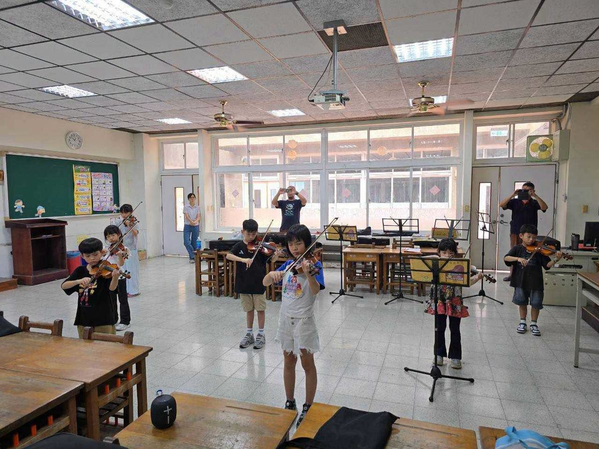
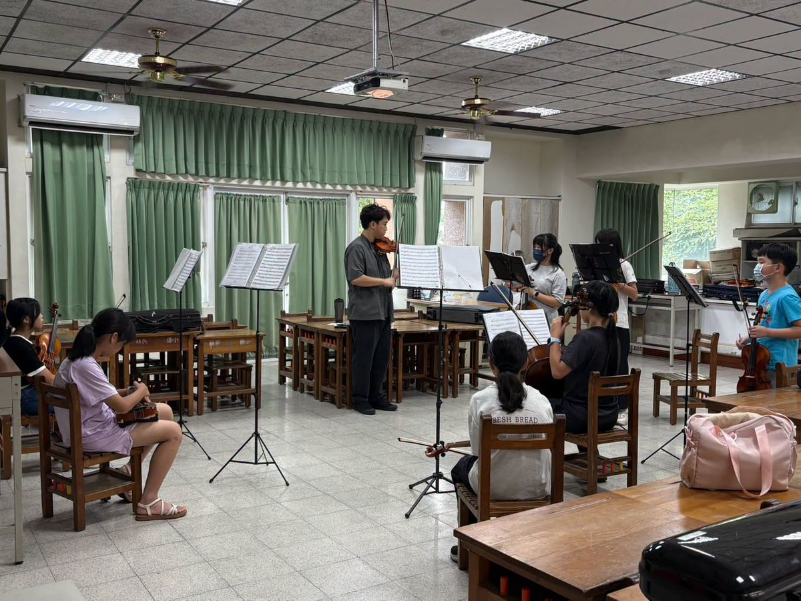

Summer break isn't just for resting — it's also a chance to grow! Even in the summer heat, the young musicians of Hsinmin's Strings & Winds Ensemble haven't slowed down one bit.



Every day, they go over the basics again and again — bowing technique, pitch, rhythm, and mastering each piece. Every note played is a challenge to themselves, and every repetition helps them improve just a little more.
Preparing for the upcoming Mayor's Cup competition, the students practice with focus and cheer each other on, building their skills drop by drop through sweat and music.
What we treasure most is watching the children slowly learn persistence, focus, patience, and the courage to never give up along the way. Thank you to this group of students who chose to keep improving their skills through summer break — your dedication is the most beautiful scene of all.
A special thank-you as well to the parents who accompany, drive, encourage, and support the children every step of the way. Because of you, they can chase their musical dreams with confidence. 🎵✨
暑假不只是休息，也是讓自己更進步的時光！
炎炎夏日，新民弦笛團的孩子們依然沒有停下腳步。
每天一遍又一遍練習，從基本的弓法、運弓練習，音準、節奏與樂曲的熟練，每一次拉奏，都是對自己的挑戰；每一次重來，都是讓自己更進步的累積。
為了即將到來的市長盃，孩子們認真準備、彼此鼓勵，在汗水與琴聲中，一點一滴累積實力。
而我們更珍惜的，是孩子們在學習音樂的過程中，慢慢學會了堅持、專注、耐心與不輕言放棄。
謝謝這一群願意利用暑假持續精進琴藝的孩子們，你們認真的模樣，就是最美的風景。
也要特別感謝一路陪伴、接送、鼓勵與支持的家長們，因為有你們的陪伴，孩子才能安心追逐自己的音樂夢想。
Words About Practice & Patience英語學習角 · 和練習與堅持有關的小單字
Six key words — tap 🔊 to listen, then try the conversation and quiz.
六個關鍵字，點 🔊 聽發音，再試試對話和小考。
情境：兩位弦笛團的孩子聊起暑假練習的事。